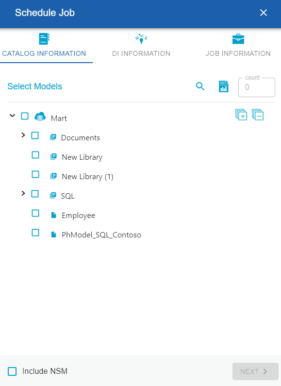

Add Jobs
A job converts a model to erwin DI Suite compatible format and then,
- exports the model to the Metadata Manager
-
exports the source and target column data from a dimensional model into the Mapping Manager
Note: Once source and target column data is exported, any updates made to them are not exported when the job runs again.
- If the model has an associated NSM file, it exports the file to the Business Glossary Manager
For more information about data sharing between erwin Data Modeler (DM) and erwin Data Intelligence Suite (DI Suite), refer to the Data Sharing topic.
By default the DM Connect for DI module opens in the Calendar view. You can toggle the page view between the List View () or Calendar View () using the respective buttons on the page toolbar.
To schedule a job, follow these steps:
- On the DM Connect For DI page, click a suitable calendar slot or click .
The Schedule Job page appears.

- Set up job parameters as follows:
On the Catalog Information tab: - Select Models
- Select models from mart catalog to export.
To view selected models, click . The Count field displays the number of selected models. - Include NSM
- Select whether naming standards must be exported.
A catalog named by the NSM file is created under Business Glossary Manager > DM NSM Files custom asset.
Note: Ensure that the DM NSM Files asset is enabled in erwin DI Suite > Business Glossary Manager Settings.
On the DI Information tab:- System Name
- Enter a system name. This corresponds to System in Metadata Manager.
- Environment Name
- Use the predefined macros to set the environment name. This corresponds to Environment in Metadata manager.
- Note: For system and environment names, following special characters are allowed:
- System: - (hyphen), _ (underscore), and space
- Environment: @ (at sign), $ (dollar sign), & (ampersand), / (slash mark), - (hyphen), _ (underscore), and space
All other special characters are replaced with _ (underscore).
- Export Options
- Select a suitable export option:
- Add New:
- If an environment exists, this option adds any new tables or columns to it.
- If an environment does not exist, this option creates an environment and adds tables and columns to it.
- Update Existing + Add New:
- If the existing model objects have changed, this option exports the updates to the existing model objects in erwin DI Suite.
- Also, it exports any new objects in the model to erwin DI Suite.
- Update Existing + Add New + Invalidate:
Along with the functionality of Update Existing + Add New option, this option invalidates any deleted tables or columns. - Delete & Reload:
This option deletes all the tables and columns. Then, it exports them again.
- Version
- Select whether a version of an existing environment must be created. This archives the existing environment.
On the Job Information tab:- Job Name
- Specify a job name.
- Scheduled Job On
- Select the date and time at which the job must run.
- Job Interval
- Select a suitable frequency at which the job must run. You can set the job to run once or recur daily, weekly, monthly, or yearly.
- Notify Me
- Select whether a notification is sent to you when the job status changes.
This enables the Notification Email and CC List fields. - Notification Email
- Specify the email address at which you want to receive the notification.
- CC List
- Specify a semi-colon-separated list of email addresses that must receive the job notification
- Run Now
- Select the checkbox to run the job immediately.
- Click Submit.
The job is added to the calendar for execution with its Job State set to Scheduled.
Once a job is set up, you can use the following options on it:
- Run Job: Use this option to run a scheduled recurring job immediately.
- Manage Job: Use this option to modify an existing scheduled job. If you modify a job:
before its run schedule, the changes take effect when the job runs
while it is running, the job is canceled, and changes are saved. They take effect when the job runs next time.
after it is past its schedule, the job runs according to the new schedule.
- Refresh Job: Use this option to refresh the job state.
- Cancel Job: Use this option to cancel a scheduled or running job.
- Delete Job: Use this option to delete a job from the job list.
- View Log: Use this option to view a job's log. In case of failures, you can use the log to troubleshoot.